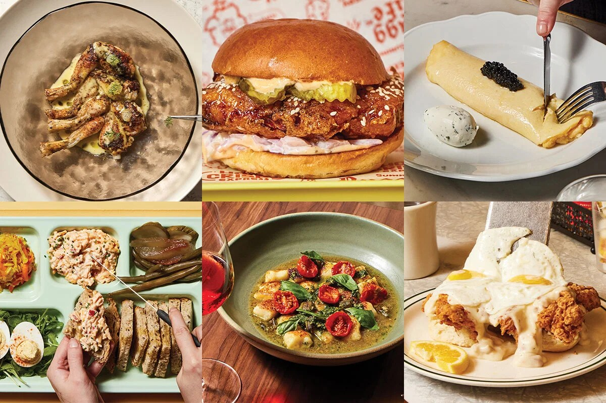

Some of the many foods available around AtlantaAtlanta is known for Southern food like fried chicken, biscuits, barbecue, and peach desserts. There are many casual restaurants where you can try these foods without spending too much.
The city also has food from many different countries. You can find Indian, Mexican, Korean, Ethiopian, Mediterranean, and many other restaurants depending on what you feel like eating.
Ponce City Market is one place with many food choices in the same building. It is fun to go with friends because everyone can get something different and still eat together.